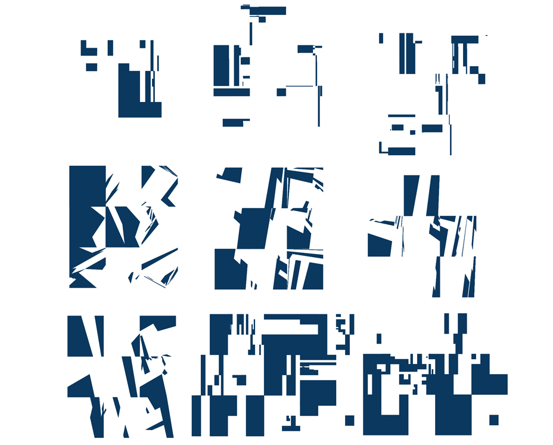

| SITE UNDER CONSTRUCTION |
| ABOUT| |
| JALE GÖZDE KÜÇÜKOĞLU jgkucukogl@gmail.com |
| my fabacademy page| |

MATERIAL-TECHNIQUE-FAB
variations,simulation, structure, analog modeling, technique research

ARCH-MATERIAL-FAB
variations, structure, analog modeling, rule-based design, component-based design

MATERIAL-FAB
3D scanning, digital modeling, 3D printing

FORM FINDING
variations, regulating lines, behaviour, form-force

METHOD-FAB
fractal, pattern, algorithmic modeling, variations, cnc milling, laser cutting

MATERIAL-TECHIQUE-FAB
material research, associative design, component based design, variations, analog modeling, structure

ARCH-FAB
organizational network, associative design, component based design, variations, cnc milling

MATERIAL-METHOD-FAB
associative modeling, variations, concrete, structure, analog modeling, 3D printing, weaving

ARCH
graduate project, concrete, structure, digital modeling

VISUAL
logo

MATERIAL-FAB
variations, concrete, structure, molding-casting, 3D milling, component-based design, experimenting

ARCH-MATERIAL-FAB
variations, plastic, recycled material, material research, 3D milling, component-based design, regulator grid

METHOD
variations,regulating lines, rule-based design, architecture machine, site organization

MATERIAL-FAB
variations, flexibility, wood, material behaviour, structure, analog modeling, laser cutting

VISUAL-DIAGRAM
diagraming

ARCH-DIAGRAM-FAB
data visualisation, 3D printing, rule-based design, diagraming

VISUAL-DIAGRAM
data visualisation
 ARCH-COMPETITION
ARCH-COMPETITION topography, public space

ARCH
variations,regulating lines, rule-based design, architecture machine, site organization

METHOD-FAB
fractal, pattern, algorithmic modeling, variations

ARCH
graduate project, concrete, continous surface, urban prosthesis, digital modeling

URBAN ANALYSIS
...

METHOD-FAB
fractal, pattern, algorithmic modeling, variations

URBAN SCALE
algorithmic modelling, urban plan,loop subdivision

ARCH
site plan, experimentation

ARCH-COMPETITION
topography, public space, culture center

ARCH-MATERIAL-FAB
variations, structure, analog modeling, rule-based design, component-based design

ARCH
concrete, tension/compression, modular component, mold-cast
 VISUAL
VISUAL web-site
URBAN SCALE
algorithmic modelling, urban plan,loop subdivision

ARCH
concrete, structure, regulator lines, digital modeling
ARCH
concrete, tension/compression, modular component, mold-cast
web-site
VISUAL
...
ARCH
concrete, structure, regulator lines, digital modeling